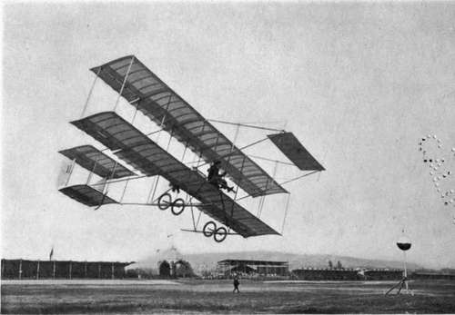

Aeroplane Motors. Part 4
Description
This section is from the book "The New Art Of Flying", by Waldemar Kaempffert. Also available from Amazon: The New Art of Flying.
Aeroplane Motors. Part 4
Fig. 38. The new Wright biplane in which the horizontal or elevating rudder is mounted in the rear.
Photograph by Edwin Levick.
The horse-power required for flight varies to a certain extent as the speed. Hence the factor that governs the maximum velocity of flight is the horse-power that can be developed on a given weight. At present the weight per horsepower of featherweight motors appears to range from two and one quarter up to seven pounds per brake horse-power. A few actual figures are given in the following list:
Antoinette 5 lbs. per brake horse-power.
Fiat 3 " " " " " Gnome under 3 lbs.
Metallurgic 8 lbs.
Renault 7 ".
Wright 6 ".
Automobile engines, on the other hand, commonly weigh 12 pounds to 13 pounds to the brake horse-power.
Because lightness and durability are opposite qualities, and because the more trustworthy a machine must be, the heavier must be its construction, it may well be inferred that the aeroplane motor is not a model either of durability or trustworthiness. The aeroplane builder appears, at present, willing to tolerate very little reliability, largely because the aeroplane is still in the hands of record-breakers and prizewinners, rather than of ordinary tourists. In making records the start takes place when the motor is ready. In a race it takes place at some determinate time, and if the motor be not ready, then the chance is lost. The record is also the result of frequent trials; a race is gained or lost in one. Thus, if one motor will make an aeroplane fly fifty miles whenever required and without unreasonable tuning up, but another makes it fly one hundred miles once out of ten attempts, the latter takes the record, though on its nine failures it may have broken down in a few miles, and may have required hours tuning up for each trial. If, however, the aeroplane is ever to be of the slightest practical use, the reliability of the engine must not only be brought up to that of the racing machine, but very much beyond it. This lack of reliability was strikingly evinced in the famous Circuit de l'Est of 1910, a circular cross-country race which started from Paris and finished there, and which included the towns of Troyes, Mezières, Douai, and Amiens. The contest was remarkable because the airmen were expected to perform what they had never attempted before. They had to fly over a given course on specified days without being able to choose weather conditions most favourable to them. Eight machines started from Paris, but after the second day the only competitors left were Leblanc and Aubrun on their Blériot monoplanes. The failures of the others were due solely to engine troubles.
Fig. 40. A Farman biplane making a turn. The entire machine is canted so that its weight is opposed to the centrifugal force generated _ by rounding an arc at high speed.
Photograph by Edwin Levick.
A resume of aeroplane motors compiled by Warren H. Miller is appended below in the concise form of a table of comparative costs and weights per horse-power based on the fifty horse-power size. It will be noticed that the Clement-Bayard is by far the heaviest, in spite of using aluminium for the case, thus adding to the already large amount of proof that for equal strength steel is always lighter than aluminium. The table also brings out the increased cost necessitated by multiplication of cylinders, to obtain increased horse-powers at light weights. The Anzani, with only three cylinders, is by far the cheapest, but its weight is about midway between the Clement and the Gnome, the lightest of them all.
Table Of French Aviation Motors
Make | H. P. | Weight per h. p. | Cost per h. p. | Speed. |
Antoinette . . | 50 | 3.84 lbs. | $48.00 | 1,200 |
Anzani .... | 50 | 4.6 lbs. | 20.00 | 1,400 |
Gnome .... | 50 | 3.36 lbs. | 52.00 | 1,200 |
E. N. V. ... | 40 | 3.85 lbs. | 37.50 | 1,500 |
Clement-Bayard | 40 | 6.05 lbs. | 4750 | 1,500 |
R. E. P. ... | 40 | 3.96 lbs. | 70.00 | 1,500 |
Wright .... | 25 | 7.2 lbs. | -- | 1,400 |
Continue to: